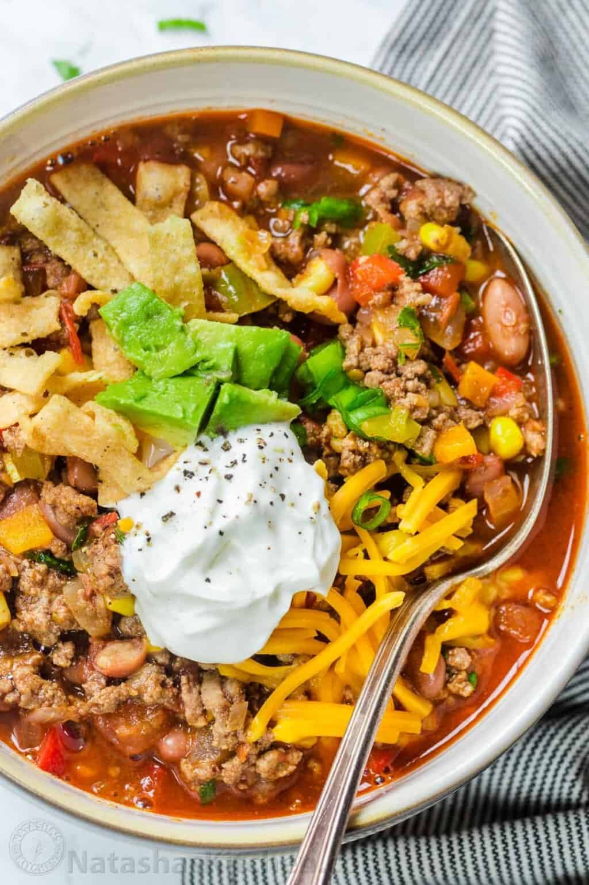

Taco Soup

The Best Taco Soup Recipe
We love all foods Mexican around here. Whether it’s Chicken Fajitas, Fish Tacos, or even Ceviche, Mexican-inspired recipes are always on rotation.
This taco soup is a great substitute for Taco Tuesday when you want tacos yet something hot and satisfying
This hearty Taco Soup recipe bursts with crave-worthy Mexican flavors, and then it comes together in just 30 minutes. After only 10 minutes of prep work,
it’s easy to serve up a warm bowl of this soup loaded with ground beef, tomatoes, corn, beans, and a quick homemade taco seasoning.
Source: Natasha Kravchuk with Natasha's Kitchen
Ingredients
- 1 pound lean group beef
- 1 Tbsp olive oil
- 1 medium onion, finely diced
- 1/2 red bell pepper, diced
- 1/2 green bell pepper, diced
- 3 garlic cloves, minced
- 2 Tbsp Taco Seasoning
- 16 oz can beans, drained (kidney or pinto)
- 1 cup corn, canned, freshly or frozen
- 1 1/2 cups tomatoes, diced, from about 1 lb fresh tomatoes
- 2 cups beef broth
Steps
- Make Taco Seasoning or measure out 2 Tbsp of storebought taco seasoning from 1 packet.
- In a Dutch oven, heat oil. Once hot, add the ground beef, onion, and bell peppers and saute until the beef is browned, breaking it up with a spatula as you cook. Spoon out any excess fat.
- Add garlic and Taco Seasoning, and stir for another minute.
- Add beans, corn, tomatoes, and broth. Bring to a boil then reduce the heat to low, cover, and keep at a simmer for 15 minutes. Season to taste with salt and pepper, or add more taco seasoning.
- Serve soup hot with your desired toppings.
Return to Homepage